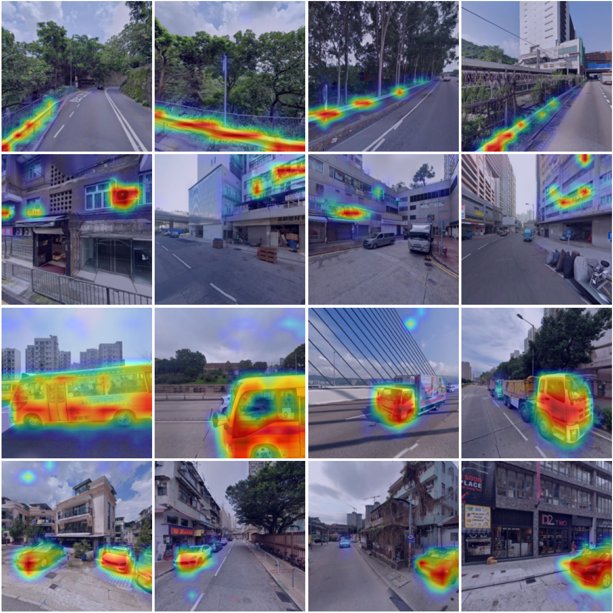
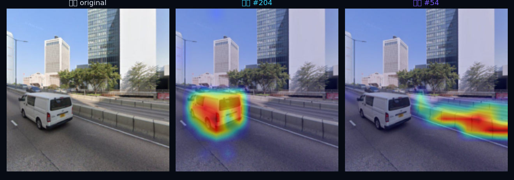
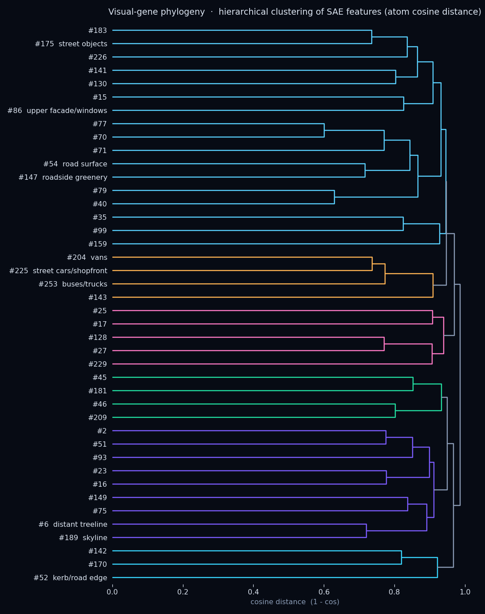
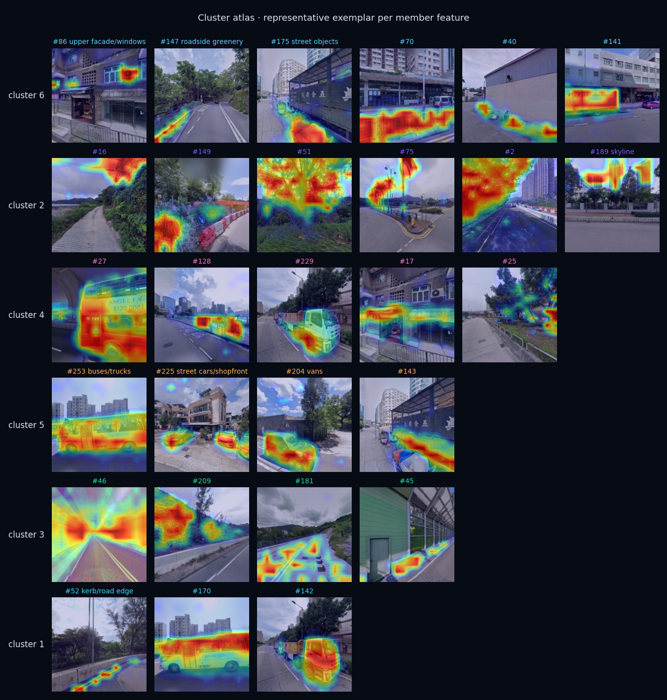
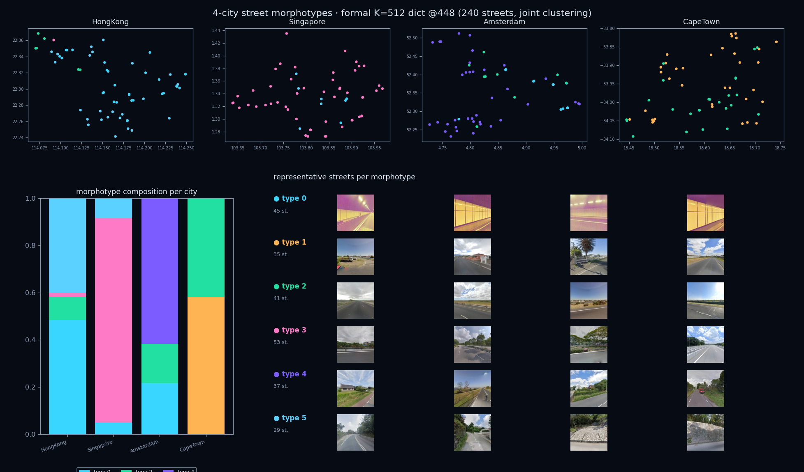
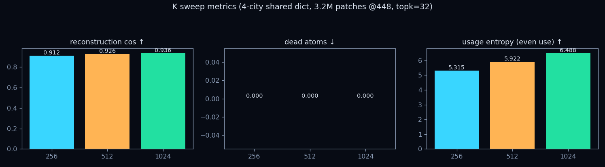
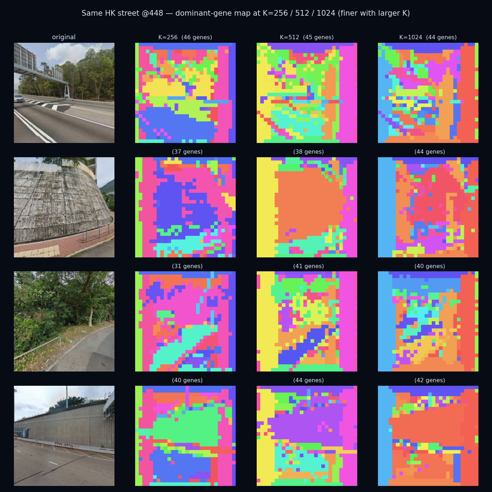

在 DINOv3 的 patch 级特征上训练一个 Top-K 稀疏自编码器， 把纠缠的视觉表征拆成一批单义维度（"视觉基因"）。每个维度的激活天然带位置—— 上采样后叠回原图，就能看到它究竟对应街景里的哪一块： 车辆、路缘、绿化带、建筑立面、天际线……全程无需任何语义分割标注。

街景 224² → ViT-L/16，剥掉 CLS/register 前缀，保留 14×14=196 个 patch 特征（各 1024 维）
每个 patch 只保留最强的 12 个激活，L0 精确钉在 12，字典 K=256，零死原子
取某个特征在 196 个 patch 上的激活，reshape 回 14×14 网格
双线性上采样到 224²，jet 配色叠加——特征的物理意义一目了然
每张卡片是一个 SAE 特征在 4 张最强激活街景上的定位（热区 = 该特征点亮的区域）。 标签是人工事后解读，不参与训练。
同一张街景上，不同特征各自锁定不同区域——证明这些维度在空间上是解耦的。

每个特征在 DINOv3 空间里是一个方向向量（解码器原子）。 按余弦距离对这些方向做层次聚类，就得到一棵视觉基因谱系树—— 方向越接近的基因编码的视觉概念越相关。整棵树完全由数据驱动，没有任何人工分类。

在同一距离阈值切开得到 6 个大簇， 每簇取代表特征的最强激活样本拼成图谱。语义结构清晰浮现：

注：车辆特征分裂到两个簇（如 #253 巴士/货车 与 #27 巴士、#229 货车分处不同支）， 这是 SAE 典型的特征分裂（feature splitting）——字典在细分不同车型，而非冗余。
把可解释的基因逐级往上聚合，就能回答"城市由哪几类街道组成"。 每个 patch 取主导基因 → 一个点的 4 个朝向 (0/90/180/270) 拼成 56×14 全景基因图 → 按高度带（天空/上部/中部/地面）数基因直方图得到组成 → 沿路网把同一街段的点池化 → CLR → PCA → KMeans 聚成街道形态型。全程无空间项、无人工标注。
28×28 每格取激活最强的基因 → 主导基因图（@448）
拼 112×28，按天空/上部/中部/地面数基因直方图
同一街段的点求均值 → 街道组成向量
CLR → PCA → KMeans → 街道形态型

正式版：四城 240 条街道，K=512 共享字典 @448，联合聚类成 6 个形态型。 用同一本字典把香港/新加坡/阿姆斯特丹/开普敦放到同一个基因空间里， 形态型立刻分出城市特异型与跨城共享型：
地图上同型的点在地理上自发成片、且城市间组成差异显著——而流水线里没有放任何空间/地理/城市标签， 这正是"空间连贯性 + 跨城可迁移"作为可解释性忠实性证据的体现：结构不是喂进去的，是从共享视觉基因里长出来的。
注：每城按"四朝向覆盖最全"选 60 条街，偏向车载主干道，故隧道/高速型占比偏高；均衡采样后住宅街/商业街等会更丰富。
正式跑用四城 320 万个 patch @448 扫了 K=256 / 512 / 1024 三组字典（topk=32）。 三组全部零死原子——数据量支持到 1024 都不浪费。重建随 K 微升（0.912→0.926→0.936）， 但更大的 K 主要是把概念语义细分、不是空间分辨率更细（下图每图基因数在三组间相近）。 权衡可解释性与保真度，正式版选 K=512。

